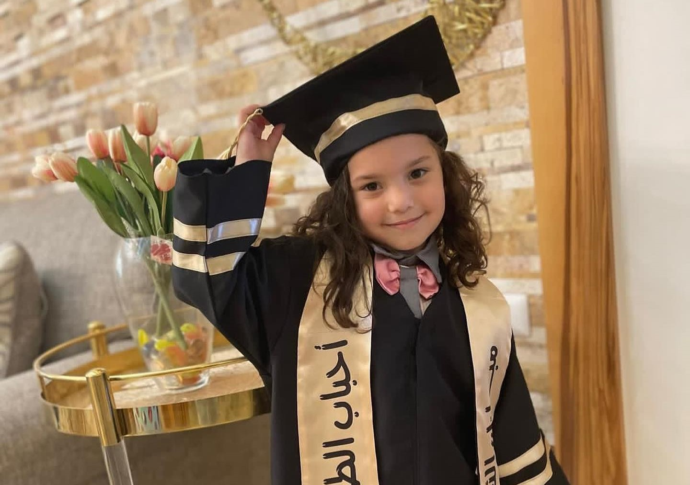

هند رجب، طفلة فلسطينية صغيرة، تحولت قصتها إلى واحدة من أكثر القصص تأثيرًا في الحرب على غزة. كانت محاصرة داخل سيارة مع عائلتها تحت القصف، تصرخ طلبًا للمساعدة، في مشهد يعكس حجم الألم والخوف الذي يعيشه الأطفال في مناطق النزاع. استمرت مناشداتها لفترة طويلة، بينما كانت أصوات القصف تحيط بها، لتصبح قصتها رمزًا لمعاناة الأطفال الأبرياء الذين وجدوا أنفسهم وسط الحرب دون أي ذنب. قصة هند ليست مجرد حادثة، بل هي شهادة حية على الواقع الإنساني القاسي، حيث يتحول الخوف إلى جزء من الحياة اليومية، وتصبح النجاة حلمًا بعيدًا.
Hind Rajab, a young Palestinian girl, became one of the most heartbreaking stories during the war in Gaza. She was trapped inside a car with her family under heavy bombing, crying for help, reflecting the fear and pain experienced by children in war zones. Her calls for help continued while explosions surrounded her, making her story a symbol of innocent children suffering in conflict. Hind's story is not just an incident, but a powerful testimony of a harsh human reality where survival becomes uncertain.
⬅ العودة إلى القصص